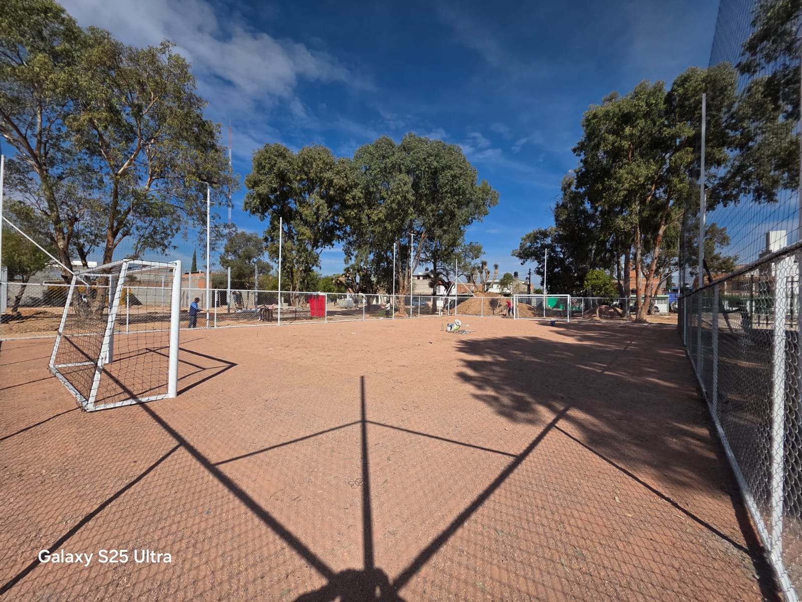
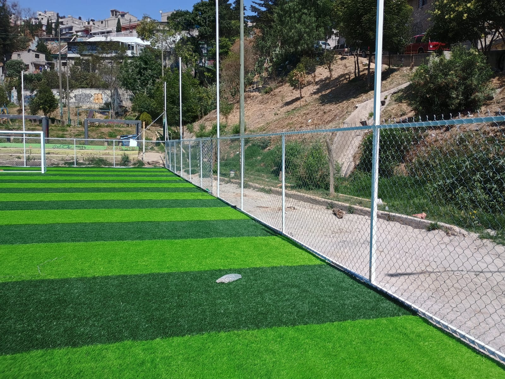
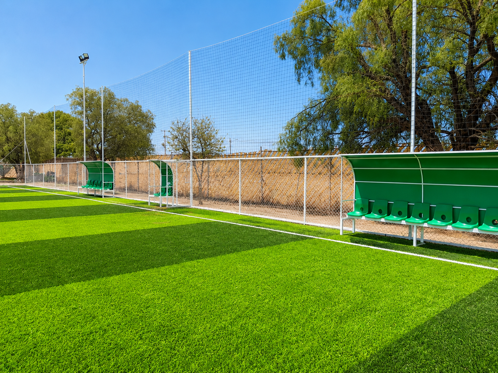

Fútbol 7
Portería oficial 2 x 6 m, ideal para canchas escolares, clubes, fraccionamientos y complejos deportivos.
Las porterías terminan la cancha. Dan escala, ordenan el juego y hacen que el proyecto se vea listo para operar. Cotizamos porterías para fútbol 5, fútbol 7, fútbol rápido y fútbol 11, con red y accesorios según el tipo de cancha.

La medida correcta depende del formato de juego, uso y nivel del proyecto. Te ayudamos a elegir la portería adecuada para que la cancha se vea proporcional y funcione bien.
Portería oficial 2 x 6 m, ideal para canchas escolares, clubes, fraccionamientos y complejos deportivos.

Formatos compactos para canchas de alto uso, espacios cerrados o proyectos comerciales.

Porterías de mayor formato para soccer, colegios, universidades, clubes y proyectos municipales.
Una cancha con porterías, malla ciclónica, red perimetral, bancas y alumbrado se percibe como complejo deportivo, no como un espacio improvisado.
Entrega una sensación lista para jugar desde el primer día.
Reduce salidas de balón y mejora el ritmo del partido.
Completa la experiencia para equipos, público y horarios nocturnos.
Porterías resistentes y proporcionales para clases, torneos internos y uso diario.
Imagen profesional para jugadores, ligas, rentas y proyectos que buscan vender mejor.
Equipamiento formal que sube la percepción del área deportiva.
Solución clara para proyectos públicos, parques y espacios deportivos comunitarios.


La portería oficial de fútbol 7 mide 2 x 6 m.
Se puede cotizar con red para entregar la portería lista para jugar.
Sí, atendemos proyectos deportivos en México según alcance y ubicación.
Sí. Puedes cotizar porterías solas o sistema completo con malla, redes, bancas, alumbrado y gradas.